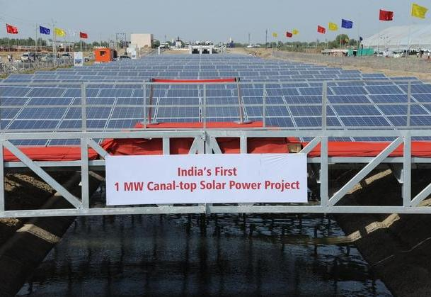
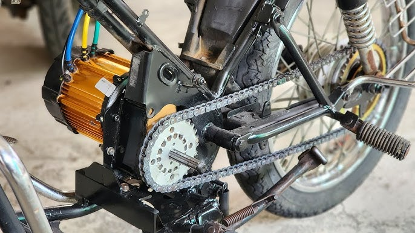

Site Coordination
Site setup, installation flow, workfront readiness, daily follow-up, and commissioning support.
WELCOME TO MY ENGINEERING WORLD
I’m Mayank. Take a walk through my experience in renewable energy, technical projects and field execution.
↓ Scroll to walk between the solar arrays01 / TRACK RECORD
Focus
The work is simple to describe and hard to do well: keep people aligned, keep HSE risks visible, and keep the site moving without losing safety, quality, or documentation discipline.
Site setup, installation flow, workfront readiness, daily follow-up, and commissioning support.
Clear instructions for subcontractors, suppliers, transport partners, procurement, and field teams.
Hazard awareness, risk identification, quality checks, rework control, and practical site discipline.
Gantt charts, cost trackers, risk logs, dashboards, site records, and stakeholder updates.
Experience
My experience combines renewable energy execution, electrical engineering, HSE-aware site coordination, documentation systems, and structured reporting for international teams.
Built a structured SharePoint knowledge hub for 15+ global partners, prepared technical and market reports, and coordinated input from product, sales, and distributor teams.
Analysed 5,000+ research records, co-authored 2 papers, and improved documentation workflows so new contributors could understand methods and responsibilities quickly.
Managed 6 solar PV and motor-engineering projects from delivery and site setup through installation, testing, commissioning, reporting, budget control, HSE follow-up, and client handover.
Maintained Gantt schedules, cost trackers, risk logs, and dashboards while rotating through production, quality, and engineering teams.
Projects
A smaller set of projects, chosen for the skills that matter most on technical construction, renewable energy, and hands-on electrical engineering work: safety, sequencing, reporting, and handover discipline.

Coordinated civil, electrical, and installation activity across a utility-scale solar site with daily progress tracking, issue follow-up, and safety-aware work sequencing.

Managed execution coordination where access, weather, working-at-height safety, toolbox discipline, and installation sequence had to be controlled tightly.

Supported field coordination across parallel work zones, with attention to alignment checks, sequencing, and rework reduction.

Supported configuration and deployment planning for off-grid solar pumping systems, balancing reliability, cost, and remote-site constraints.

Analysed canal-top solar as a dual-use infrastructure concept: PV generation above canals can reduce land use, limit evaporation, improve panel cooling, and create new maintenance and structure-cost challenges.
Source: Mongabay India. Photo: Hitesh vip/Wikimedia Commons, CC BY-SA 3.0.

Built an Excel reporting dashboard that turned daily site updates, delays, dependencies, safety notes, and issues into management visibility.

Converted a Bajaj Pulsar 150 platform by removing the petrol engine, fitting an electric drive motor, and designing a high-capacity lithium battery pack from tested rescued laptop cells around an 80 km/h top-speed and 250 km range target.

Developed a working electromechanical prototype through design, winding, assembly, integration, and validation testing.
Skills
The tools are there to support site control, safe execution, and clean handover documentation.
Contact
Based in Nurnberg, Germany. Willing to travel across Germany and nearby countries for multi-week assignments, HSE-conscious site coordination, and field execution work.